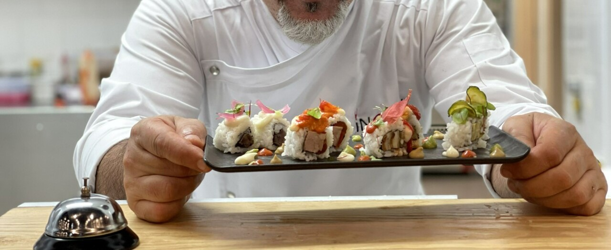

Se siete alla ricerca di un’esperienza culinaria unica, siamo qui per soddisfare i vostri desideri. La nostra grande sala elegante vi accoglierà con un’atmosfera raffinata, creando l’ambiente perfetto per una serata indimenticabile.

Al ristorante giapponese Maky&Pepi Sushi, ci impegniamo sempre per offrire qualità eccellente e idee innovative nel mondo del sushi. I nostri chef esperti utilizzano solo ingredienti freschi e di prima qualità per creare piatti che soddisfano tutti i palati. Che siate amanti del sushi tradizionale o desideriate provare combinazioni uniche, troverete sicuramente qualcosa di speciale nel nostro menu.

Il nostro ristorante di sushi propone la formula All You Can Eat, che vi permetterà di assaggiare una varietà di prelibatezze giapponesi a volontà. Potrete gustare una vasta selezione di sushi, sashimi, tempura e molto altro ancora. Sarete liberi di esplorare i sapori e scoprire i vostri preferiti, senza limiti.